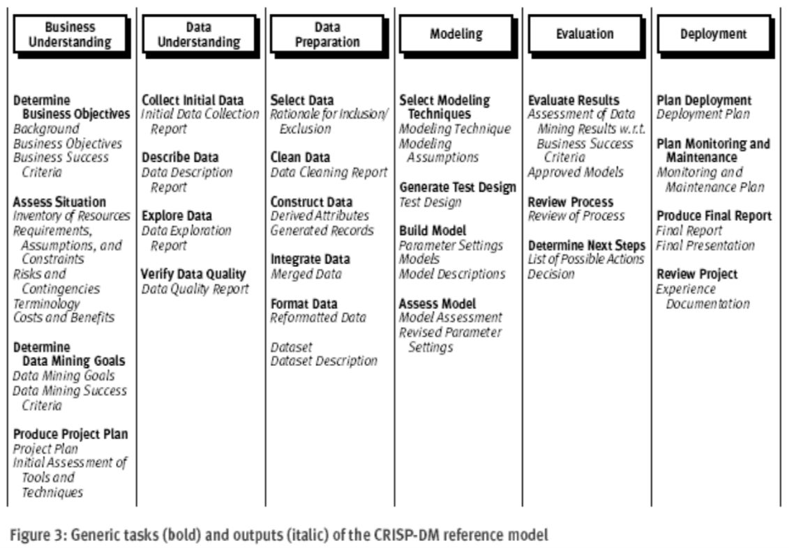
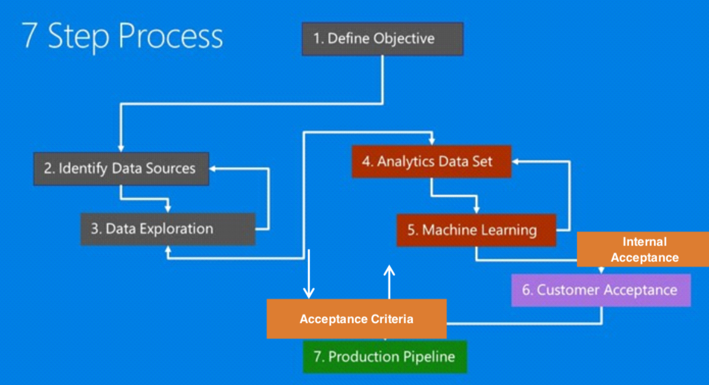
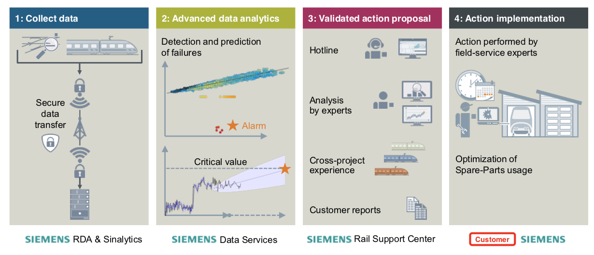
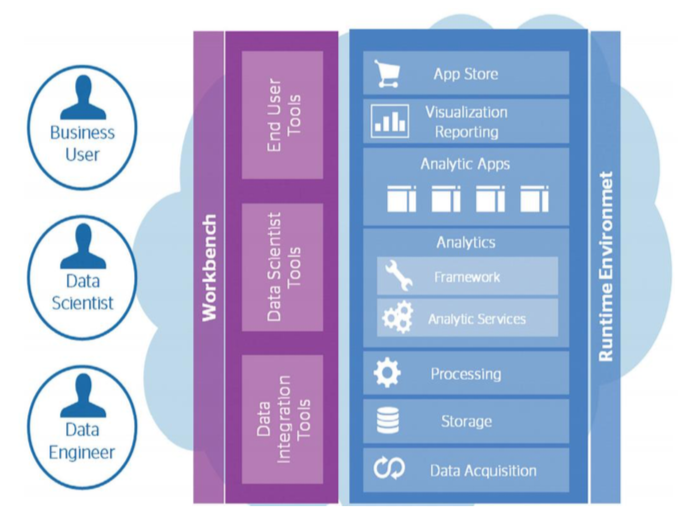

THINKING LIKE A DATA SCIENTIST
Author: Adam Updated: 24/05/2019
Data Science (DS) is a new, exponentially-growing field, which consists of a set of tools and techniques used to extract useful information from data. It is also an interdisciplinary, problem-solving oriented subject that learns to apply scientific techniques to practical problems.
1. A practitioners Guide to IoT Data Pipeline
AI technologies are yielding real business results for Manufacturers, but a successful AI requires robust data pipelines and a systematic approach. The interest in data science is to solve problems and answer questions using data and technology and to aim at improving future outcomes.
So, what is the data science process? First, we have to make sure what are we trying to achieve with Data Science. Data science serves two important but distinct sets of goals: improving the products our customers use, and improving the decisions our business makes. Data products use data science and engineering to improve product performance, typically in the form of better search results, recommendations and automated decisions. Decision science uses data to analyze business metrics — such as growth, engagement, profitability drivers, and user feedback — to inform strategy and key business decisions.
- Using Data Science to Build Better Products: Data products leverage data science to improve product performance. They rely on a virtuous cycle where products collect usage data that becomes the fodder for algorithms which in turn offer users a better experience.
- Using Data Science to Make Better Decisions: Decision science uses data analysis and visualization to inform business and product decisions. The decision-maker may be anywhere in the organization — from a product manager determining how to set priorities on a road map to the executive team making bet-the-company strategic decisions. Decision science problems span a wide range, but they tend to have several characteristics. They're novel problems that the organization has not needed to solve before. They’re often subjective, requiring data scientists to deal with unknown variables and missing context. They’re complex, with many moving parts that lack clear causal relationships. At the same time, decision science problems are measurable and impactful — the result of making the decision is concrete and significant for the business. Note: decision science should do more than produce reports and dashboards
With the right Asset data in place, analytics provides the capability to make better, more informed decisions. Data Modelling is used to collect, store and cut the asset data in an efficient way. Visualisation is used to integrate, consolidate and present asset information in a meaningful way to the right people at the right time.
What analysics predit? - Predict asset degradation and exceedance - Predict failure likelihood - Predict impact of intervention type
What analysics optimise? - Optimising whole life cost for asset portfolio - Simulation of asset performance based on known environmental conditions - Optimise long term workbank
Solving business problems can be treated systematically by following a process with reasonably well-defined stages. Extracting useful knowledge from data to solve business problems can be treated systematically by following a process with reasonably well-defined stages.
- CRISP-DM (The cross industry standard process for data mining).

- Keeping such a process in mind provides a framework to structure our thinking about analytics problems.
- Such structured thinking also contrast critical points where human creativity is necessary versus points where high- powered analytical tools can be brought to bear.
Success in today’s data-oriented business environment requires being able to think how these fundamental concepts apply to particular business problems-to think data-analytically. Formulating data mining solutions and evaluating the results involves thinking carefully about the context in which they will be used. Here, you could refenence a framework to structure our thinking about analytics problems in seven steps.
- First, the evaluation has to be statistically sound, allowing us to compare models, choose among them and estimate their expected future performance.
- Second, and perhaps more importantly, we need to evaluate models with regards to the ways they will be utilized from a business perspective.

It's also important of evaluating insights generated from data science projects.
- Data Understanding
- Has the data quality been assessed? What did this exercise look like? Where there any significant concerns?
- For data that is manually captured by (at some stage) by humans, has this been accounted for? How?
- Is the organization's data capture process clear? Were there any data items (having looked at the data capture process) that didn’t match their definitions?
- Insight Value
- Is the insight actionable (can I act upon this insight)? Are there any legal, regulatory, logistical or other challenges that would prevent me from acting upon this insight?
- Is the insight valuable? If this insight is correct, and take action based upon it, will those actions lead to better outcomes (e.g. profits, minimize cost, success) for the organization?
- Is the insight testable? Is it possible to verify the conclusions of the project? If not, does this present a major problem?
- Execution
- Has the code quality been tested?
- Is the statistical model / implementation based on reliable assumptions(e.g. homogeneity of time series patterns)
- Have the model outputs been tested independently of the model(e.g. train/test)?
2. Best Practices When Starting And Working On A Data Science Project
Great data scientist is obsessed with solving problems, not new tools. The core function of any data-driven role is solving problems by extracting knowledge from data. A great data scientist first strives to understand the problem at hand, and then defines the requirements for the solution to the problem, and only then decides which tools and techniques are best fit for the task. In most business cases, the stakeholders you will interact with do not care about the tools – they only care about answering tough questions and solving problems. Knowing how to select, use and learn tools or techniques is a minimum requirement to becoming a data scientist. A great data scientist knows that understanding the underpinnings of the business case is paramount to data science project success.
Great data scientist wants to find the solution and knows it’s not perfect. A great data scientist understands that there’s almost never a perfect solution, and a simple imperfect solution delivered on time is much better than a hypothetically perfect one late. In fact the Agile software development methodology seeks to prevent analysis-paralysis by employing adaptive evolutionary planning, early delivery and continuous improvement. The mindset of a great data scientist works in the same way they think about solving their stakeholder problems and know that they need to be redefined when new insights are uncovered. The main piece of advice is that don’t overthink and over-analyze the problem. Instead, you need to phase out your analysis or modelling process in stages and get feedback from the problem owners. This way you will ensure that the learning process is continuous and it improves the decisions with each iteration.
It is the best practices when starting and working on a data science project. What you need to think about is to learn through the consult, communicate, plan, and also technical best practice.
In the aspect of consultant, the fact is you are probably acting as a consultant to some degree. Recognize that you are in a position where you need to influence stakeholders to use your insights and take action.
- Understand the business problem. Ask questions, take notes, play back your understanding until you have the best understanding possible of what the real problem is, its drivers, its blockers and what a successful outcome looks like for all stakeholders.
- Understand the stakeholders. Who is asking you to solve this problem? Why? Who is sponsoring the project and what are their concerns, drivers, targets?
For your work to be successful, you need to be able to communicate what it is you have done and why your audience should care. When communicating,
- Be able to summarise your key insights on a page
- Keep the technical details to an appendix. Your objective is rarely to impress with technicalities. Instead it is to deliver insight that leads to action.
- Be able to visualize your insights with a story that engages your audience
There are almost unlimited ways to cut data and present it. This does not let you off the hook however. Your stakeholders and time with business is limited (they have day jobs). When running your project,
- Set goals with timelines
- Measure and track progress and adjust when necessary
- Avoid the temptation to do something because it’s cool or fun before validating it with your stakeholders
And finally, for technical best practice, - Keep Everything (Principle 1: Space is cheap, confusion is expensive) - Keep It Simple (Principle 2: Prefer simple, visual project structures and conventions) - Automate (Principle 3: Prefer automation with program code ) - Maintain Data Provenance (Principle 4 Maintain a link between data on the file system, data in the analytics environment, and data in work products) - Version Control Data and Code (Principle 5: Version control changes to data and analytics code) - Consolidate (Principle 6: Consolidate team knowledge in version-controlled builds) - Think like a developer (Principle 7: Prefer analytics code that runs from start to finish) - Test models. Always reviews the standard tests that accompany a model or algorithm. Run models against new data to make sure they perform.
3. Demo: Predictive Maintenance | Predicting the RUL(Remaining Useful Life) of a Railway Asset

Understanding the Business
To fully understand the problem, we need to assure the problem, clear the questions, and measure the outcome.
Main idea
Predict the value of a response variable based on one or more predict or variables (features).Regression Model
- Linear regression
- Decision tree
- Neural Network
...
Question to answer
How much longer an in-service engine will last before it fails?
Predicting RUL is a central goal of predictive maintenance algorithms
The remaining useful life (RUL) of a component is the expected life or usage time remaining before the component requires repair or replacement. Predicting remaining useful life from system data is a central goal of predictive- maintenance algorithms. The term life time or usage time here refers to the life of the component defined in terms of whatever quantity you use to measure system life. Units of life time can be quantities such as the distance travelled (miles), fuel consumed (gallons), repetition cycles performed, or time since the start of operation (days). Similarly time evolution can mean the evolution of a value with any such quantity.Typically, you estimate the RUL of a system by developing a model that can perform the estimation based upon the time evolution or statistical properties of condition indicator values, such as:
A model that fits the time evolution of a condition indicator and predicts how long it will be before the condition indicator crosses some threshold value indicative of a fault condition.
A model that compares the time evolution of a condition indicator to measured or simulated time series from systems that ran to failure. Such a model can compute the most likely time-to-failure of the current system.
Predictions from such models are statistical estimates with associated uncertainty. They provide a probability distribution of the RUL of the test component.
The Predictive Challenge
The main areas of application are as follows: - Use survival analysis (and advance probability distributions like Weibull) to predict the lifetime of railway components - Build (non-)parametric models for failure time data to explore lifetime of components based on age and usage data - Find important features that contribute to the failure of the component using Cox ́s proportional hazard model - Build component risk based models to identify the components that get over used in advance so that these can be maintained properly - Survival analysis attempts to answer these questions: - What is the average time to failure? - What is the probability at a particular time that failure will occur? - How do survival rates compare between different groups? - What impact do other features have on survival rates?
RUL App: Remaining Useful Life Prediction Using Weibull Proportional Hazard Model(WPHM) REST API
What Does the Algorithm Do?
- The WPHM algorithm calculates the distribution of asset lifetimes based on age. To perform this calculation, the algorithm needs to know the ages of assets when they failed, and the ages of assets that still work. The assets and their components need to be of the same type.
The result is an estimate of the remaining useful life (RUL) of each component at the time of the calculation. The algorithm can also calculate the probability of failure of components within a certain time period.
Model Configuration
To configure a model for an RUL prediction with the WPHM algorithm, use the REST APIs or configuration UIs for the machine learning engine.
Data Preparation for Model Training and Scoring
- Before training and scoring, data scientists need to configure a model. In the configuration, they need to specify the column that contains the age when an asset failed, or the current age of an asset that is still working.
- The algorithm also needs information on whether an asset is still working or if it is not working anymore. The status value 0 means that the asset is still working, the status value 1 means that the asset failed and is not working anymore.
- To calculate the probability of failure for a certain time period, this time period needs to be specified using the same time unit as used for the age of the asset.
- To predict the probability of failure for a certain time period (in a week's time, for example), this prediction period needs to be specified as well using the same time unit as used for the age of the asset.
Analytics Approach
Express problem in context of statistical and Machine Learning techniques, - Regression : “predicting the Expected time to Failure” - Classification: “Does this machine have failure A, Failure B , or are they Normal?” - Clustering: “Are there groups of diagnostic messages that always precedes a failure?” - Recommendation: “How Action to take if i see this error message?” - Outlier Detection
Models for predicting Remaining Useful Life
- Degradation Models
Degradation models extrapolate past behavior to predict the future condition.
This type of RUL calculation fits a distribution model to degradation profile of a condition indicator, given the degradation profiles in our ensemble. It then uses the degradation profile of the test component to statistically compute the remaining time until the indicator reaches some prescribed threshold. These models are most useful when there is a known value of the condition indicator that indicates failure. Example degradation model types are:
Linear degradation model — Describes the degradation behavior as a linear stochastic process with an offset term. Linear degradation models are useful when the system does not experience cumulative degradation.
Exponential degradation model — Describes the degradation behavior as an exponential stochastic process with an offset term. Exponential degradation models are useful when the test component experiences cumulative degradation
- Survival Models
Survival analysis is a statistical method used to model time-to-event data. It is useful when we do not have complete run-to- failure histories, but instead have:
Only data about the life span of similar components. For example, we might know how many miles each engine in the ensemble ran before needing maintenance, or how many hours of operation each component in the ensemble ran before failure. In this case, we use the historical information on failure times of a fleet of similar components, this model estimates the probability distribution of the failure times. The distribution is used to estimate the RUL of the test component.
Both life spans and some other variable data (covariates) that correlate swith the RUL. Covariates, also called environmental variables or explanatory variables, comprise information such as the component provider, regimes in which the component was used, or manufacturing batch.
Data Compilation
- The chosen analytics approach determines the data requirements
- Content, formats, representations
- Initial data collection is performed
- Available Data ?
- Obtain data ?
- Revised data requirements or collect more data ?
- Then data understanding is gained
- Initial insights about data
- Descriptive statistics and visualization
- Additional data collection to fill gaps, if needed
Data Preparation
Data preparation is arguably the most time-consuming step with 80% of the entire DS process is in data cleaning and preparation. Data preparation encompasses all activities to construct and clean the data set. Accelerate data preparation by automating common steps.
- Data cleaning
- Missing or invalid values
- Eliminate duplicate rows
- Formatting properly
- Combining multiple data sources
- Transforming data
- Feature engineering
Modelling
- Modelling:
- Developing predictive or descriptive models
- May try using multiple algorithms
- Highly iterative process
Model Evaluation
- Model evaluation is performed during model development and before model deployment.
- Understand the model’s quality
- Ensure that it properly addresses the business problem
- Diagnostic measures
- Suitable to the modeling technique used
- Training/Testing set
- Refine model as needed
- Statistical significance tests
Deployment and feedback
- Once finalized, the model is deployed into a production environment.
- May start in a limited / test environment
- Involves other roles:
- Solution owner
- Marketing
- Application developers iv. IT administration
- Getting Feedback:
- How well did the model perform?
- Iterative process for model refinement and redeployment
- A/B testing
4. Final Thoughts
Getting the foundations in place; an integrated single source of accurate asset data, is key to delivering improved decision making. With the data in place we deliver insight that supports key investment decisions through analytics. It is then important to clearly articulate the business outcome and benefits that are driven from making better decisions. In order to deliver all the capabilities of a Data Analytics solution, a complete platform needs to be implemented, as shown below:

The output of modeling may be strikingly rich, but it’s valuable only if managers and, in many cases, frontline employees understand and use it.
- Output that’s too complex can be overwhelming or even mistrusted.
- What’s needed are intuitive tools that integrate data into day-to-day processes and translate modeling outputs into tangible business actions.
- Many companies fail to complete this step in their thinking and planning—only to find that managers and operational employees do not use the new models, whose effectiveness predictably falls.
- There’s also a critical enabler needed to animate the push toward data, models, and tools: organizational capabilities.
- Much as some strategic plans fail to deliver because organizations lack the skills to implement them, so too big-data plans can disappoint when organizations lack the right people and capabilities.
And finally increase the probability of success by involving key stakeholders from the beginning”.
- Begin by considering how front-line staff and engineers utilize data to make decisions.
- Their know-how and experience, along with business drivers, are the foundation upon which to base a data analytics solution.
- Their activities and use of data, along with their collaboration, are required to create transformational linkages among operations, maintenance, and commercialization — providing the cornerstone to a successful data analytics solution.
- Data must be analyzed and presented so it is vertically integrated, understandable, and useful to everyone — including non-technically trained staff and management.
- Increase the probability of success by involving key stakeholders from the beginning. A data analytics project is likely to fail if you conduct it without involving the stakeholders, and then upon completion tell them, “Here’s what the data shows. Now make use of it.”
- Choose a project that supports the organization’s overall goals and make sure you have key stakeholder buy-in.
- The goal of your initial project should be to prove the value of analytics and get people on board about its potential benefits.
- Make sure the project has adequate funding and access to data.
- Start small and use the results to build momentum and leadership support for follow-on projects with greater potential.
- Positive leadership is necessary to ensure that the data analytics initiative stays on course until successes begin to manifest.
- Assign a project champion with leadership support to shepherd the implementation and adoption of the results.